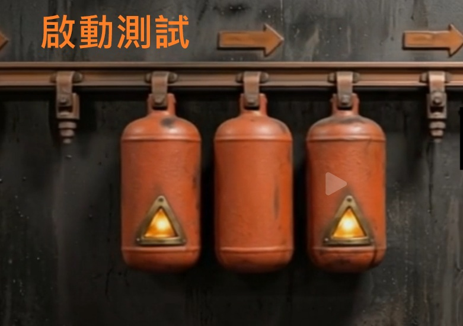

AI智捷方舟-AI 計數系統
這是一套跨 Windows 11 與 Ubuntu 22.04 執行的工業影像計數程式，整合 YOLOv8 偵測、ByteTrack 追蹤、Trip Wire / ROI 計數、A/B 類別分流、語音提示與 CSV 記錄。
系統定位
本系統用於即時或離線影片中的目標計數。主要目標類別為 A，次要判斷類別為 B。當 A 通過指定絆線或進入 ROI 區域時，系統會計入一次，並判斷當下 A 的框內是否含有 B。
mainAPP.py。若要啟動 GUI，請在專案根目錄執行 python mainAPP.py。
功能特色
雙類別判斷
A 類別負責主計數，B 類別作為輔助條件。系統可分別統計「含 B 的 A」與「無 B 的 A」。
追蹤 ID 重映射
ByteTrack 原始 ID 會被映射成 A 專屬連續 ID，避免 B 佔用追蹤序列後造成 A 的 ID 跳號。
一次推論分流
每幀只呼叫一次 YOLO 追蹤流程，同時偵測 A/B，再依類別分流，降低閃爍與 ID 不穩定風險。
多種來源
支援本地影片檔、RTSP 網路串流、USB 攝影機。影片檔可開啟輪播，播完自動重播並持續累計。
互動式 ROI / 絆線
可在預覽畫面上直接用滑鼠設定 ROI 多邊形或 Trip Wire 線段，座標以 0 到 1 的比例儲存。
事件式輸出
只有發生新計數事件時才寫入 CSV，也只有新事件才觸發語音提示，避免同一物件重複播報。
畫面組成

安裝與啟動
專案目前已可在 Windows 11 與 Ubuntu 22.04 運行。以下指令以專案根目錄為執行位置。
1. 建議環境
| 項目 | 建議版本 | 說明 |
|---|---|---|
| 作業系統 | Windows 11 / Ubuntu 22.04 | 已依目前專案狀態支援兩平台。 |
| Python | 3.9 以上 | 目前已有 Python 3.9 編譯檢查紀錄。 |
| GPU | 可選 | 有 CUDA GPU 可加速 YOLO 推論；CPU 亦可執行但速度較低。 |
2. 安裝依賴
pip install -r requirements.txt主要依賴如下：
ultralytics>=8.2.0
opencv-python>=4.9.0
PyQt5>=5.15.0
numpy>=1.24.03. 啟動程式
python mainAPP.py標準操作流程
- 選擇影像來源 選擇本地影片、RTSP 串流或 USB 攝影機。本地影片需指定檔案路徑；RTSP 需輸入串流 URL；USB 需選擇攝影機編號。
-
選擇 YOLO 模型
指定
.pt權重檔，例如目前專案中的PTmodel/522-best-A_production_line.pt。 - 按下預覽 本地影片會顯示第一幀；RTSP / USB 會顯示即時預覽。預覽時即可繪製 ROI 或 Trip Wire。
- 設定計數模式 若使用模式 A，請繪製 Trip Wire；若使用模式 B，請繪製 ROI 多邊形。
- 開始推論 按下開始後，系統會載入模型、建立推論執行緒、開始偵測與計數。
- 查看計數與紀錄 Dashboard 會顯示總計數、含 B、無 B、FPS 與事件歷史；CSV 會在首次計數事件發生時建立。
ROI 與 Trip Wire 繪製方式
Trip Wire
點擊「繪製絆線」後，在影像上依序點擊兩個點。系統會用這兩點建立線段，並在 Trip Wire 模式下判斷 A 是否穿越。
ROI 多邊形
點擊「繪製 ROI」後，用左鍵新增頂點，至少三點後用右鍵封閉多邊形。A 的中心點進入 ROI 時可觸發計數。
settings.json，不同解析度的來源仍可維持相對位置。
計數邏輯
模式 A：Trip Wire 穿越計數
系統記錄每個 A 物件上一幀與目前幀的中心點，透過線段兩側的 cross product 符號判斷是否穿越 Trip Wire。現行邏輯只在物件向右移動時觸發計數，也就是 dx > 0。
模式 B：ROI Enter 進入計數
系統以 OpenCV pointPolygonTest 判斷 A 物件中心點是否落在 ROI 多邊形內或邊界上。進入 ROI 時，若該追蹤 ID 尚未被計數，就新增一次事件。
A/B 關聯判斷
當 A 觸發計數時，系統會檢查是否有任一 B 的中心點位於該 A 的 BBox 內。若有，這次事件歸類為「含 B」；否則歸類為「無 B」。
| 狀態 | 畫面顏色 | 統計歸屬 |
|---|---|---|
| A 尚未計數 | 黃色框 | 尚不列入總數 |
| A 已計數且含 B | 綠色框 | 總計數 + 含 B 計數 |
| A 已計數且無 B | 藍色框 | 總計數 + 無 B 計數 |
| B 物件 | 青色框 | 只作為 A 的輔助判斷，不單獨計數 |
設定說明
系統設定儲存在專案根目錄的 settings.json，GUI 啟動時會自動載入，操作中也會在必要時保存。
| 欄位 | 用途 | 範例 |
|---|---|---|
source_type | 影像來源類型 | file / rtsp / usb |
source_path | 影片檔路徑或 RTSP URL | video/smart-counter-video-test.mp4 |
usb_index | USB 攝影機編號 | 0 |
model_path | YOLO 權重路徑 | PTmodel/... .pt |
count_mode | 計數模式 | trip_wire / roi_enter |
roi_points | ROI 多邊形正規化座標 | [[0.2, 0.3], [0.7, 0.3], ...] |
wire_points | Trip Wire 正規化座標 | [x1, y1, x2, y2] |
csv_dir | CSV 輸出資料夾 | logs |
loop_video | 本地影片播完後是否輪播 | true |
voice_prompt_enabled | 是否啟用語音提示 | true |
last_count | 上次保存的總計數 | 17 |
模型類別名稱
目前主要類別名稱設定在 config.py：
TARGET_CLASS_NAME = "A"
TARGET_CLASS_B_NAME = "B"若模型中的類別名稱不是 A/B，需要同步調整此處，否則系統會找不到對應類別。
輸出資料與語音提示
CSV 檔案
CSV 會在第一次計數事件發生時建立，檔名格式為 count_YYYYMMDD_HHMMSS.csv。預設輸出位置為 logs/。
| 欄位 | 說明 |
|---|---|
count | A 物件累計總計數。 |
track_id | A 物件的追蹤 ID，已由系統重映射為連續 ID。 |
timestamp | Unix 時間戳，單位為秒。 |
datetime | 可讀日期時間，含毫秒。 |
mode | 事件發生時的計數模式。 |
has_b | 計數當下 A 的 BBox 內是否含有 B。 |
count_with_b | 含 B 的 A 累計數。 |
count_no_b | 無 B 的 A 累計數。 |
語音提示
啟用語音提示後，新計數事件發生時會非同步播放音檔，不會阻塞推論流程。
| 事件狀態 | 播放音檔 | 放置位置 |
|---|---|---|
| 含 B | B.wav | voice-wav/ |
| 無 B | NO_B.wav | voice-wav/ |
程式架構
系統採用 GUI 主執行緒與影像推論執行緒分離的設計。GUI 透過 Qt Signal/Slot 接收幀資料，避免長時間推論阻塞操作介面。
主要檔案
| 檔案 | 責任 |
|---|---|
mainAPP.py | 程式入口，初始化 Qt App。 |
config.py | 全域常數、類別名稱、顏色、設定資料結構。 |
core/video_source.py | 封裝影片、RTSP、USB 攝影機來源。 |
core/inference.py | YOLOv8 推論、ByteTrack 追蹤、A/B 分流、ID 重映射。 |
core/counter.py | Trip Wire / ROI 計數與 B 是否落在 A 框內的判斷。 |
core/csv_logger.py | 事件式 CSV 記錄。 |
gui/main_window.py | 主視窗、執行緒生命週期、設定讀寫、語音提示。 |
gui/video_widget.py | 影像顯示、BBox/ROI/Trip Wire 繪製、滑鼠座標轉換。 |
gui/control_panel.py | 來源、模型、計數模式與操作按鈕。 |
gui/dashboard.py | 總計數、子統計、FPS、歷史事件表格。 |
疑難排解
啟動後模型載入失敗
請確認 model_path 指向存在的 .pt 檔案，且 Python 環境已安裝 ultralytics。如果使用 GPU，也需確認 CUDA 與 PyTorch 環境相容。
畫面有偵測框但沒有計數
先確認目前模式是否與已繪製的區域一致。Trip Wire 模式需要設定絆線，ROI Enter 模式需要設定至少三點的 ROI。Trip Wire 目前只計算向右穿越。
找不到 A 或 B 類別
系統會依 config.py 中的 TARGET_CLASS_NAME 與 TARGET_CLASS_B_NAME 搜尋模型類別。若模型類別名稱不同，請修改為模型實際名稱。
RTSP 無法連線
請確認 RTSP URL、帳號密碼、網路連線、防火牆與攝影機串流設定。Ubuntu 上也需留意 OpenCV 是否具備 FFmpeg 支援。
語音沒有播放
請確認右側面板已勾選語音提示，並確認 B.wav 與 NO_B.wav 位於 voice-wav/ 資料夾。Windows 使用 winsound；Ubuntu 會尋找 paplay、aplay、pw-play 或 ffplay。
需要重新開始計數
Dashboard 提供重置按鈕，會要求輸入密碼 000。重置目前會清除顯示計數與歷史表格，並建立新的 CSV session。
core/counter.py 與 core/inference.py。